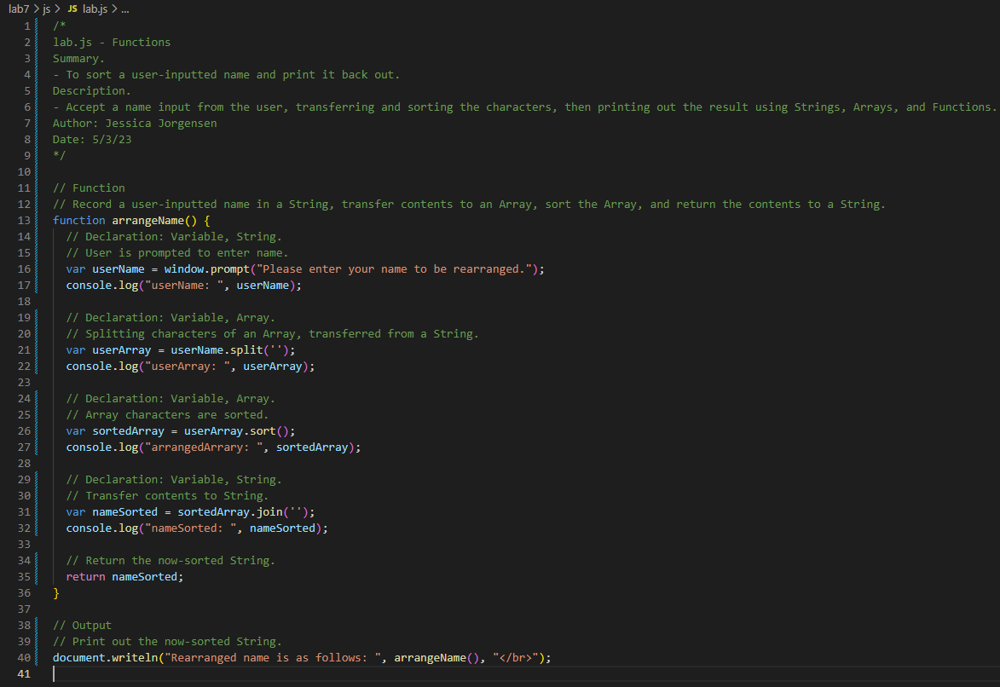
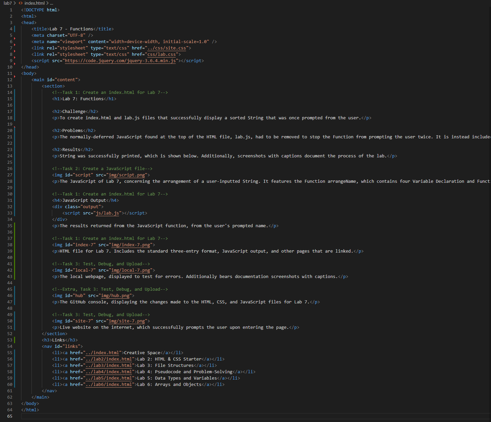
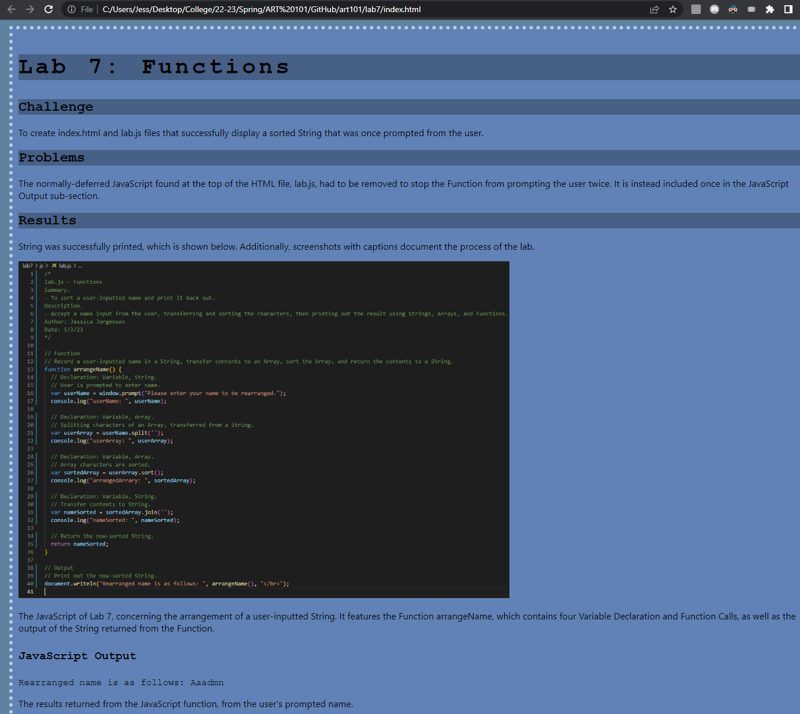
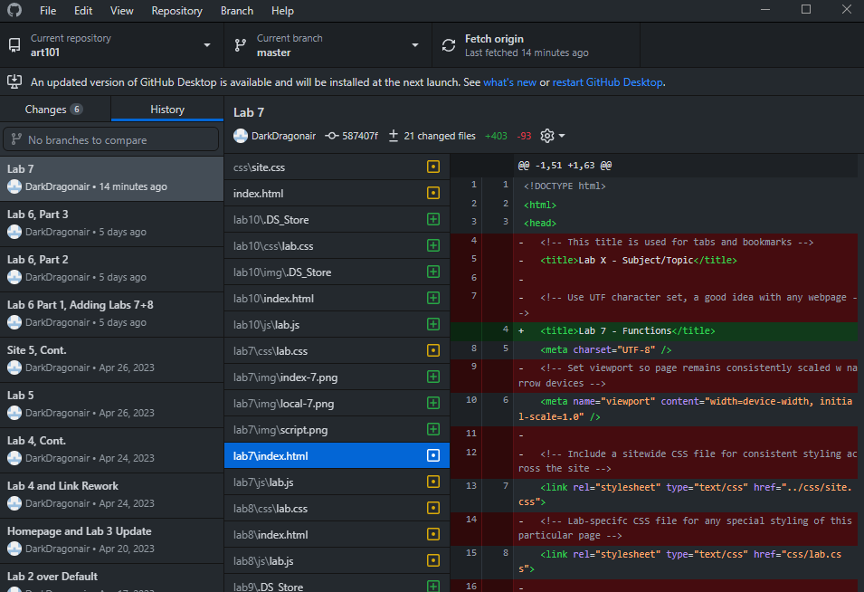
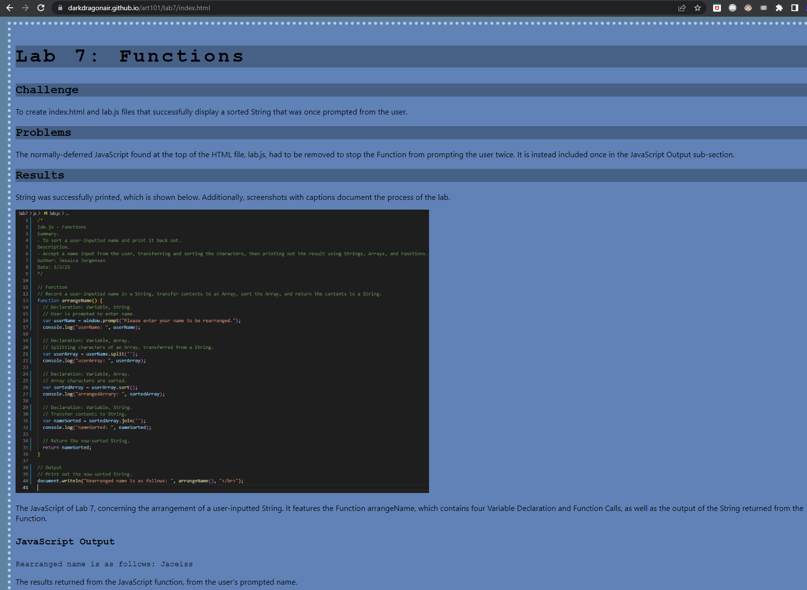

Lab 7: Functions
Challenge
To create index.html and lab.js files that successfully display a sorted String that was once prompted from the user.
Problems
The normally-deferred JavaScript found at the top of the HTML file, lab.js, had to be removed to stop the Function from prompting the user twice. It is instead included once in the JavaScript Output sub-section.
Results
String was successfully printed, which is shown below. Additionally, screenshots with captions document the process of the lab.
The JavaScript of Lab 7, concerning the arrangement of a user-inputted String. It features the Function arrangeName, which contains four Variable Declaration and Function Calls, as well as the output of the String returned from the Function.
JavaScript Output
The results returned from the JavaScript function, from the user's prompted name.
HTML file for Lab 7. Includes the standard three-entry format, JavaScript output, and other pages that are linked.
The local webpage, displayed to test for errors. Additionally bears documentation screenshots with captions.
The GitHub console, displaying the changes made to the HTML, CSS, and JavaScript files for Lab 7.
Live website on the internet, which successfully prompts the user upon entering the page.